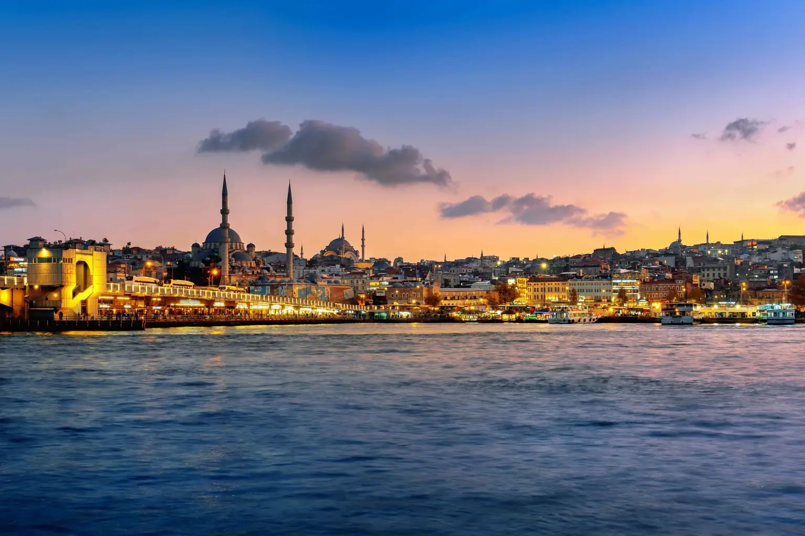

Istanbul & Bursa 7-Day Program
A week that combines Istanbul's magic with Bursa's calm: the Old City and the Bosphorus, then two nights in Bursa with the Uludağ cable car and the first Ottoman mosques.
PriceDepends on the season — request your quote

7 days • 6 nights • Turkey
A full week in Turkey without changing hotels: you stay in Istanbul and make day trips to Sapanca and Maşukiye, to Bursa and Mount Uludağ, and to the Princes' Islands, in a private car with an English-speaking driver.
The 7-day Turkey tour program is the first thing people ask about when visiting Turkey for the first time: what can I see in one week without spending half of it on roads and in airports? Our answer in this program is simple: one hotel in Istanbul all week, and from it you set out on day trips to the best of its surroundings. That way you see the Old City and the Bosphorus, the nature of Sapanca and Maşukiye, Bursa and Mount Uludağ, and the Princes' Islands, and you pack your bags only once.
The program suits families and those traveling with children or older people, because its rhythm is balanced: a day in the city, then a day in nature. The Bursa trip is the longest (about two and a half hours each way), which is why it is followed by a light day of your choice. If you prefer a week with a different character, such as the Black Sea, the beaches of Antalya or an overnight stay in Bursa, you will find the alternatives on this page. The price depends on the season, the hotel category and the number of travelers, and we send you a written offer via WhatsApp.
Our driver meets you at Istanbul Airport (IST) or Sabiha Gökçen (SAW) and takes you to the hotel where you will stay all week. After a rest, a short walk along İstiklal Avenue and Taksim Square, or a quiet dinner near the hotel, is enough for this evening. We hand you a SIM card and go over the schedule for the coming days with you.
A day of history: we start at Sultanahmet Square with the Blue Mosque, then Hagia Sophia and the underground Basilica Cistern. After lunch we enter Topkapı Palace, the residence of the Ottoman sultans, with its gardens overlooking the Bosphorus and the Sea of Marmara. We finish at the Grand Bazaar and the Spice Bazaar to shop for Turkish delight, coffee and gifts.
We follow the European coast of the Bosphorus: Dolmabahçe Palace, then Ortaköy and its mosque by the bridge, then Bebek and Rumeli Fortress. After that comes a boat tour between the two continents, then we cross to the Asian side to climb Çamlıca Hill and visit its Grand Mosque, and watch Istanbul from above at sunset.
We leave the city for nature on a drive of about two hours east to Lake Sapanca. We start with the village of Maşukiye, with its streams, small waterfalls and restaurants among the trees, then ride the Kartepe cable car above the forests. In the afternoon we relax on the lakeshore, and for those who like to be active, ATVs and ziplines are available. We return to Istanbul in the evening.
The longest and richest day of the program: we set out early for Bursa via the Osmangazi Bridge, about two and a half hours away. We visit the Grand Mosque and the Silk Bazaar at Koza Han, then take the Uludağ cable car up to the highlands: snow in winter and green meadows in summer. On the way back we stop at the ancient plane tree in İnkaya for tea, and arrive in Istanbul at night.
A day to your taste, in which you choose one of three: the Princes' Islands by ferry, where there are no private cars and you explore Büyükada on foot or by bicycle and electric cart; or a trip to Şile and Ağva on the Black Sea; or a shopping day at the malls and wholesale markets. Tell us your choice a day ahead so the driver can plan the timing.
Depending on your flight time: last-minute shopping or a quiet breakfast at the hotel. The driver picks you up at the agreed time and takes you to the airport about three hours before departure. Have a safe journey, and we'll see you in a future story.
| City | Nights | Suggested |
|---|---|---|
| Istanbul | 6 | A 4-star hotel in Taksim, Şişli or Sultanahmet all week, with an upgrade available to 5 stars or a room with a Bosphorus view. We choose the area with you according to your priority: shopping and restaurants, or being close to the sights. |
Same length, different character
If nature, the sea or staying overnight outside Istanbul suits you better, these programs have the same length.
A week that combines Istanbul's magic with Bursa's calm: the Old City and the Bosphorus, then two nights in Bursa with the Uludağ cable car and the first Ottoman mosques.

A week in Turkey's Black Sea region: two nights on Lake Uzungöl, a night in Ayder among the mountains, Sümela Monastery and the city of Trabzon, with an English-speaking driver.

A week on the Turkish Riviera: a seaside resort, the Old Town and Düden Waterfalls, the Olympos cable car, Side and Manavgat, and Alanya Castle.
Book this program
Add your arrival date, the number of travelers and the hotel level, and you will receive a written offer with the final price via WhatsApp.
Questions & answers
One week is enough for one region seen well, not for all of Turkey. That is why we keep you in Istanbul and its surroundings: the Old City, the Bosphorus and the trips to Sapanca, Bursa and the islands. If you would like to add Trabzon without rushing, the 10-day Istanbul and Trabzon program is the better fit.
It depends on what you like. For a first visit and for families we suggest this program: Istanbul with day trips. For nature lovers and cool summer weather: the 7-day Trabzon and Uzungöl program. For the sea and resorts: the 7-day Antalya program. And for those who want to stay overnight in Bursa: the 7-day Istanbul and Bursa program.
It depends on the nationality of your passport. Citizens of Saudi Arabia, the UAE, Kuwait, Qatar, Bahrain, Oman, Jordan, Lebanon, Tunisia and Morocco enter without a visa for up to 90 days, and other nationalities need an e-Visa or a visa from the consulate. The details for each nationality are in the Turkey visa guide.
We don't set a fixed price because it changes with the season, the hotel category, the number of travelers and the type of car. Send us your dates and the number of people, and we will send you a written offer with the final price before any payment.
Yes, the program is fully customizable: the Bursa trip can be swapped for a lighter day, a night in Sapanca can be added, or the stay can be extended. Tell us what you prefer and we will adjust the offer.
From the OYA guide

A balanced 10-day family itinerary in Turkey that combines city, nature and snow or lakes, with ideas for children's activities and practical tips on accommodation and getting around with little ones.

Instead of generic numbers that don't fit your trip, we explain the components of travel costs in Turkey and what raises and lowers them, with a simple way to calculate a one-week budget and practical saving tips.

Turkey has varied climates, so what suits Istanbul may not suit Antalya or Uzungöl in the same month. A month-by-month guide helps you choose the timing and the destination together.
You may also like

Five balanced days in Istanbul: the Old City, the Bosphorus between two continents, and a day trip to Lake Sapanca and Maşukiye, with a selected hotel and an English-speaking driver.

Ten days between the Black Sea coast and its plateaus: Trabzon, Uzungöl, Sultan Murat, Ayder and Rize, Sümela Monastery and Karaca Cave, at a relaxed pace.

Combines two of the most popular destinations in Turkey: Istanbul's landmarks and the Bosphorus, then Trabzon, Lake Uzungöl, Ayder and Sümela Monastery, with domestic flights.
Personal service from start to finish
We design a custom program for you, with the number of days, cities and hotels you want — just tell us.